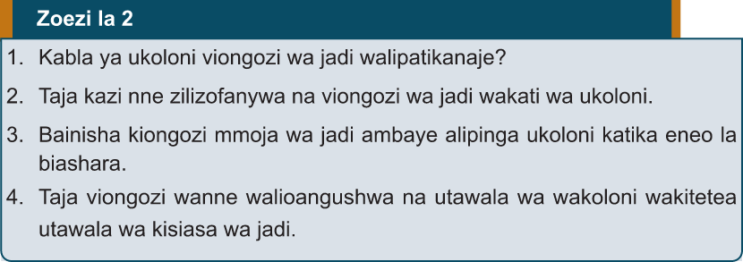

mikutano ya kijadi ambapo watu walihusishwa. Katika utawala wa Kimweri huko Usambaa kulikuwa na bunge na mawaziri waliotawala. Ukoloni ulileta mifumo ya kidikteta ambapo uamuzi ulifanywa na maofisa wa kikoloni bila kushirikisha jamii. Hii ilisababisha kupungua kwa ushirikishwaji wa wananchi katika masuala ya kisiasa.
Mabadiliko ya alama za utawala na mamlaka
Kabla ya ukoloni wafalme na viongozi wa jadi walikuwa na nguo rasmi na vifaa walivyovitumia kama alama ya mamlaka yao. Vifaa hivyo ni kama vile nguo za rangi maalumu na kofia zilizotengenezwa kwa ngozi za wanyamapori hasa simba au chui kama alama ya nguvu na uhodari wao. Pia, walitumia mikuki na ngao kama alama ya wao kuwa amirijeshi wakuu na walinzi wa jamii zao. Wakoloni walipokuja walileta alama zao kama bendera, mavazi rasmi ya majeshi na magereza kama alama za utawala.
Zoezi la 2
1. Kabla ya ukoloni viongozi wa jadi walipatikanaje?
2. Taja kazi nne zilizofanywa na viongozi wa jadi wakati wa ukoloni.
3. Bainisha kiongozi mmoja wa jadi ambaye alipinga ukoloni katika eneo la biashara.
4. Taja viongozi wanne walioangushwa na utawala wa wakoloni wakitetea utawala wa kisiasa wa jadi.

Athari za ukoloni katika mifumo ya mamlaka za kijadi kiutamaduni
Ukoloni uliathiri mifumo ya mamlaka za kijadi nchini Tanganyika. Katika nyanja za kiutamaduni, mabadiliko makubwa yalitokea kutokana na sera na mifumo ya utawala wa wakoloni wa Kijerumani na baadaye Waingereza. Athari hizi zilijitokeza katika maeneo yafuatayo: